Save Last
Clip the moment after it already happened. No commands, no external recorder, no missed plays.

Free NeoForge 1.21.1 replay studio
Flash Replay is a client-side replay recorder and cinematic studio for Minecraft creators. Save missed moments, rebuild the camera move, stage actors, grade the shot, and export clips ready to post.
Fast proof
Marketplace pages convert better when the first scroll shows the loop: save the moment, direct the shot, export the clip. These GIFs are the assets to embed near the top of Modrinth and CurseForge.
Clip the moment after it already happened. No commands, no external recorder, no missed plays.
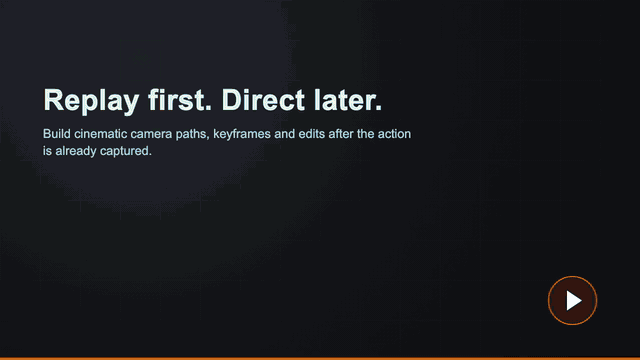
Replay the action first, then rebuild the camera path for a cleaner cinematic shot.
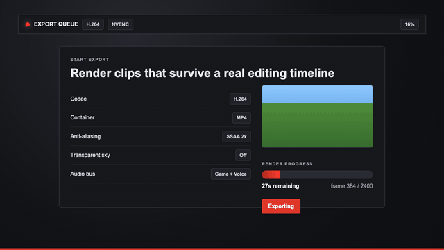
Render H.264, HEVC, ProRes, GIF, PNG sequences and clean stills for editing or posting.
Creator workflow
Each section below has a marketplace-ready image. The UI visuals are presentation previews, made to explain the workflow clearly while the real runtime media focuses on gameplay proof.
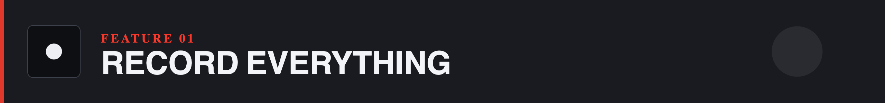
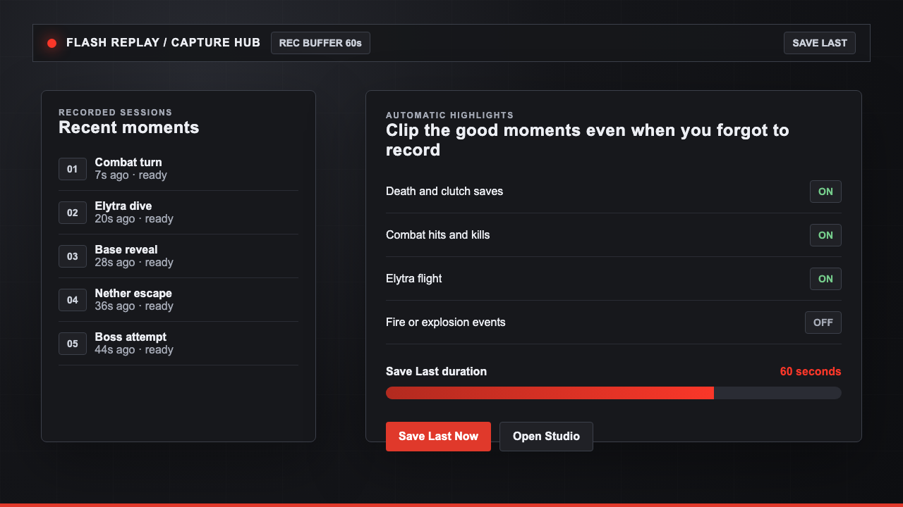
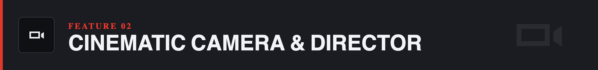
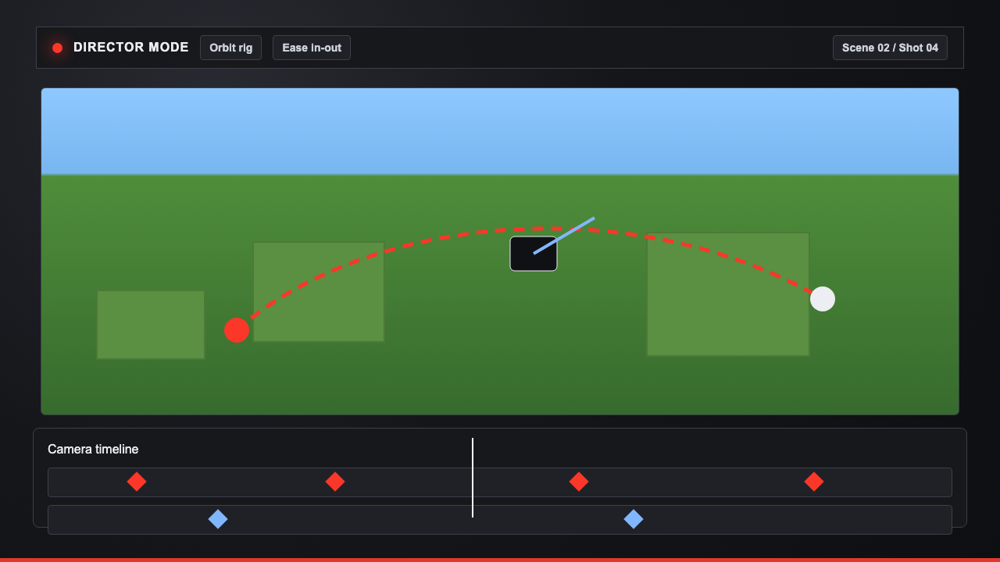
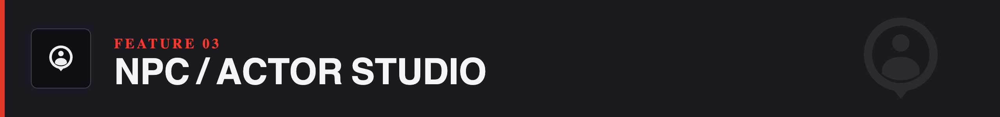
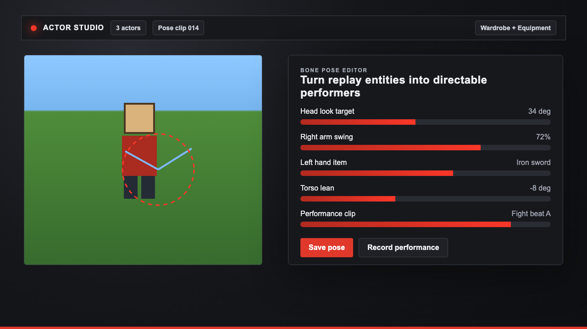
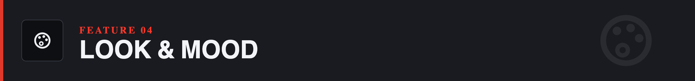
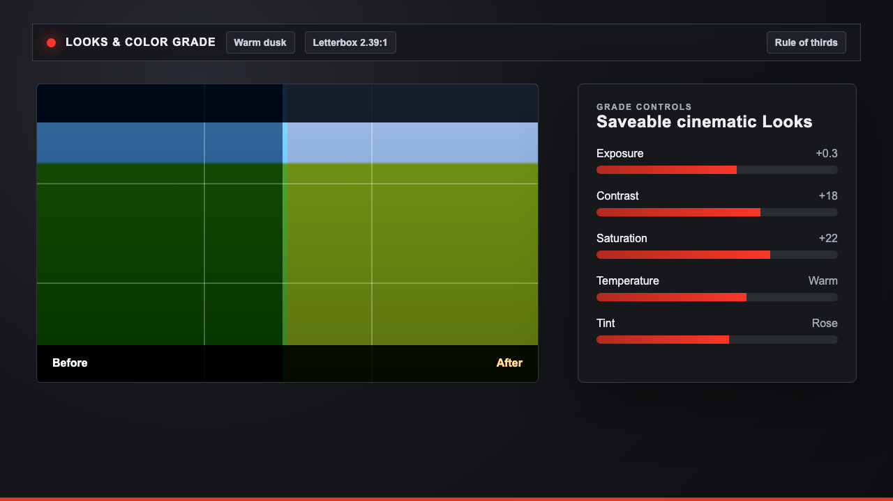
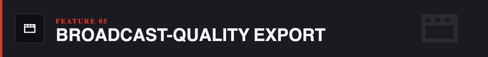
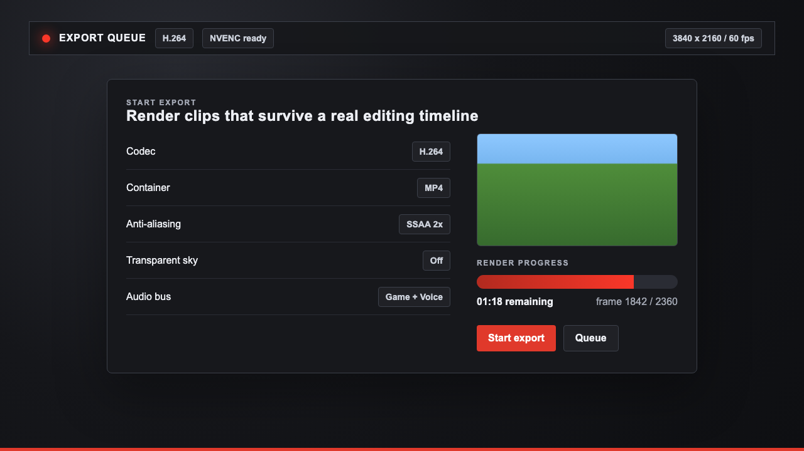
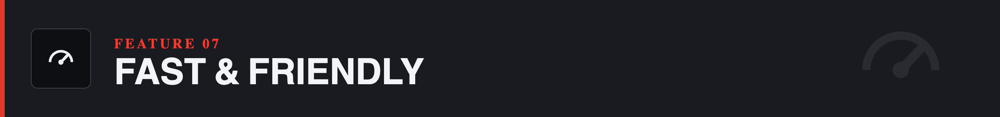
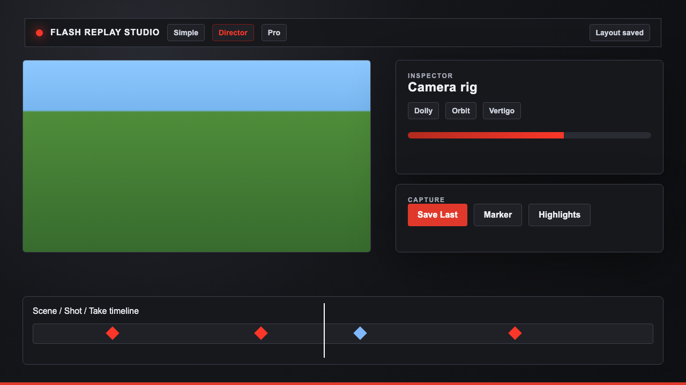
Modded Minecraft first
Flash Replay targets NeoForge 1.21.1 and is designed around modded creator workflows instead of a clean vanilla-only recording setup.
| Area | Why it matters for downloads |
|---|---|
| Shader workflows | Record and export cinematic clips with shader-driven visuals instead of plain screenshots. |
| Voice and multiplayer moments | Capture social clips and server moments people want to share. |
| Large builds and far shots | Use replay camera work for base tours, establishing shots and cinematic reveals. |
| Actor and combat scenes | Stage thumbnails, fights, machinima scenes and repeatable performance beats. |
| Legacy replay workflows | Keep older replay material useful while moving into a stronger cinematic tool. |
Download goals
These goals describe the intended growth path if the community keeps downloading and sharing Flash Replay. Compatibility expands in stages; multi-version work starts at 500,000 downloads instead of landing all at once.
Quick-start polish: clearer install text, first-run prompts, default keybind suggestions and a beginner-friendly Save Last setup.
Stability update focused on recording reliability, crash-safe recovery and cleaner replay session naming.
Highlight tuning: better presets for combat, deaths, elytra moments, fire, explosions and server-event clipping.
Export preset pack for YouTube, TikTok, Discord, GIF previews, transparent shots and high-quality archive renders.
Director update with more camera rig presets, reusable shot templates and smoother timeline editing.
Actor Studio expansion: pose presets, wardrobe workflows, performance clips and batch thumbnail tools.
Creator-pack compatibility pass for shaders, voice chat, large builds, combat animations and heavy modpacks.
Project workflow update: templates for trailers, build showcases, PvP montages, cinematic server intros and thumbnail sets.
Performance milestone: faster seek, lighter capture overhead, better export queue behavior and low-friction diagnostics.
Multi-version work begins: maintain NeoForge 1.21.1 while opening the first 1.20.1 compatibility branch.
Fabric beta path: extract shared replay/editor logic and ship the first Fabric test line for the newest stable Minecraft branch.
Forge beta path: bring core recording, replay playback and export workflows to Forge after the shared core is proven.
Stable loader matrix for Fabric, Forge and NeoForge across the first supported 1.20.1 and 1.21.x lines.
Latest-version train: keep the newest Minecraft release moving alongside the long-term 1.20.1 creator branch.
Final availability target: Fabric, Forge and NeoForge support from Minecraft 1.20.1 through the latest stable versions, released in staged LTS tracks.
Roadmap goals are community milestones, not fixed release dates. Each step depends on testing, loader changes and Minecraft version stability.
Paste-ready copy
The repo includes marketplace copy with GitHub raw asset URLs. Copy the Markdown into Modrinth, and use the CurseForge file as the order and text for its rich editor.
Flash Replay is a free download built for creators who want more than a plain screen recording. The page, GIFs and mockups in this kit are designed to make that value clear in the first few seconds.
Presentation assets only. This repository does not contain the mod source code or release builds.